1. Introduction
Diskfun includes two built-in fast solvers that can be used to compute solutions to the Possion and Helmholtz equations on the unit disk. In this example, we use an implicit time-stepping scheme and Diskfun's Helmholtz solver to compute the solution to the heat equation.
2. Heat equation on the disk
The heat equation on the disk is given by $$ u_t = \alpha \nabla^2 u, \quad { (x, y), \; x^2 + y^2 \leq 1 }, \quad \quad (1) $$ where $\nabla^2$ is the Laplacian operator, and $\alpha > 0$ is the thermal diffusivity constant. We additionally impose the following boundary and initial conditions on the solution $u$: $$ u(\theta, r, 0) = u_0(\theta, r) \quad \quad u(\theta, 1, t) = g(\theta). \quad \quad (2) $$ Here, $t \geq 0$ represents time, and the spatial components of $u$ are expressed in polar coordinates, where $\theta \in [-\pi, \pi]$ is the angular variable and $r \in [0, 1]$ is the radial variable.
3. Discretization in time
We discretize in time using the second order accurate backward differentiation formula (BDF2). This approximates $u_t$ at $t_n$ as $$ u_t \approx (3u_{n+1} - 4u_{n} + u_{n-1})/(2\Delta t), \quad \quad (3) $$ where $\Delta t$ is the timestep and $u_n(\theta, r, t_n)$ is the (approximate) solution at time $n \Delta t$. Substituting (3) into (1) and solving for $u_{n+1}$ results in the following partial differential equation: $$ 3 u_{n+1} - 2\Delta t \alpha \nabla^2 u_{n+1} = 4 u_{n} - u_{n-1}. \quad \quad (4) $$ This is the Helmholtz equation. We can express (4) in a more conventional form by introducing the constant $K^2 = -3/(2 \Delta t \alpha)$, so that $$ \nabla^2 u_{n+1} + K^2 u_{n+1} = \frac{K^2}{3}(4 u_{n} - u_{n-1}). \quad \quad (5) $$ We can solve for $u_{n+1}$ with the diskfun.helmholtz command.
4. An example with a known solution
When the initial condition is selected as an eigenfunction of the Laplacian on the disk with Dirichlet boundary conditions, the exact solution to (1) is known. Here, we select the initial condition $u_0$ in (2) to be the sum of two eigenfunctions. Specifically, let $$ u_0(\theta, r) = A_{8,2} J_{8}(\omega_{8,2}r )\cos(8 \theta) + A_{4,4} J_{4}(\omega_{4,4}r )\cos(4 \theta), \quad \quad (6) $$ where $J_m$ is the $m$ th order Bessel function of the first kind, $\omega_{m,n}$ is the $n$ th positive root of $J_m$, and $A_{i,j}$ is a normalization factor. This function is zero on the boundary of the unit disk, so $g$ in (2) is the zero function. We can construct $u_0$ using diskfun.harmonic.
u0 = diskfun.harmonic(8,2)+diskfun.harmonic(4,4);
contourf(u0)
title('initial condition')
colormap(hot), colorbar, axis off, caxis([-2,2])
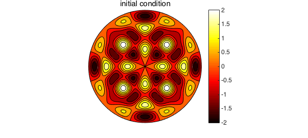
The code below uses the discretization in (5) to numerically compute the solution to (1). To start the method and find $u_1$, we use one step of backward Euler (BDF1). We compute the solution for $0 < t \leq 2$ using a timestep $\Delta t = 0.01$. The roots of the Bessel functions appearing in (6) are required for computing the exact solution. Since we have them, they are also used in this example to define the diffusivity constant $\alpha$. A contour plot of the solution is displayed every 50 timesteps.
lam1 = roots(chebfun(@(x) besselj(8,x),[15 17]));
lam2 = roots(chebfun(@(x) besselj(4,x),[16 18]));
alpha = 1/(lam1.^2+lam2.^2); % diffusion constant
bc = @(t) 0*t; % boundary condition
dt = 0.01; % Time step
tfinal = 2; % Stopping time
nsteps = ceil(tfinal/dt); % Number of time steps
m = 20; % Spatial discretization
up = u0; % Previous time step
% One step of backward Euler
K = sqrt(1/(dt*alpha))*1i; % Helmholtz frequency for BDF1
u = diskfun.helmholtz(K^2*up, K, bc, m, m);
K = sqrt(3/(2*dt*alpha))*1i; % Helmholtz frequency for BDF2
for n = 2:nsteps
rhs = K^2/3*(4*u - up);
up = u;
u = diskfun.helmholtz(rhs, K, bc, m, m);
% Plot the solution every 50 time steps
if ( mod(n, 50) == 0 )
contourf(u), colormap(hot), caxis([-2 2])
title(sprintf('Time %1.2f',n*dt)), colorbar, axis('off'), snapnow
end
end
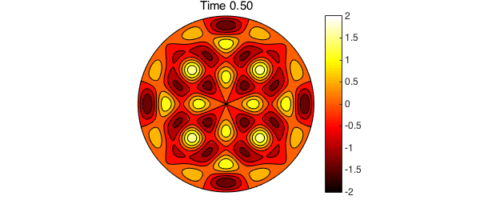
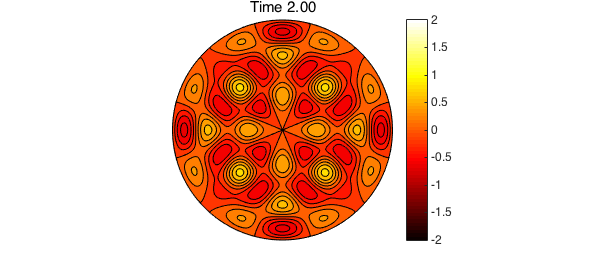
We now compare the true solution at $t=2$ to the above numerical results. The error is primarily induced by the time-stepping scheme, and the spatial discretization has contributed very little additional error.
utrue = exp(-lam1^2*alpha*tfinal)*diskfun.harmonic(8,2)+...
exp(-lam2^2*alpha*tfinal)*diskfun.harmonic(4,4);
norm(u-utrue)
ans =
5.375213127010716e-06
The Helmholtz solver used in Diskfun achieves optimal computational complexity (see [5]), but it also returns the solution as a diskfun at at an additional computational cost. In practice, this is unnecessary, and one can easily modify the solver and gain considerable efficiency by working directly with the 2D Chebyshev-Fourier coefficient matrices associated with the solution at each timestep [5].
5. Hot spots on the edge of the disk
In this example, we consider a 2D plate with an initial heat profile $u_0$ consisting of a sum of Gaussian bumps. The absolute maximum of this function occurs in the interior of the plate, but several local maxima occur on the plate's boundary. We construct this function and plot it below.
xs = [-1, 0 1, 0];
ys = [ 0, -1 0, 1];
m = [ 6, 5, 8, 30];
u0 = diskfun( @(x,y) 60*exp(-5*(x+.2).^2 -5*(y+.2).^2) );
for i = 1:4
u0 = u0 + diskfun(@(x,y) m(i)*exp(-20*(x-xs(i)).^2-20*(y-ys(i)).^2));
end
plot(u0)
axis('off'), colormap(jet), colorbar
title('u0')
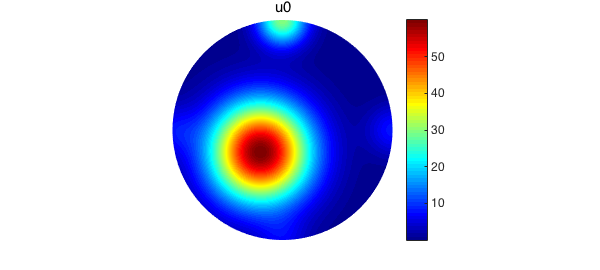
The function $u_0(\theta, 1, 0) = g(\theta)$ is the boundary condition that will be imposed on $u$ for all time. We represent $g$ as a periodic chebfun and plot it below. Note that the maximum of $g$ is attained at $\theta = \pi/2$.
g = u0(:,1);
plot(g), axis square
title('g(\theta)')
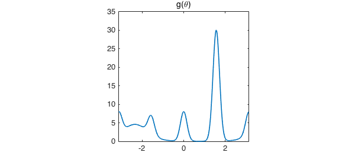
We seek the solution $u$ for all $t \geq 0$. The discretization method described in (4) can be used to compute the time-dependent solution. In the code below, we find the numerical solution for $0 < t \leq 0.2$. As time increases, heat flows toward the hottest spot on the boundary of the disk.
dt = 0.01;
tfinal = .2;
nsteps = ceil(tfinal/dt);
m = 128;
alpha = 1.25;
up = u0;
bc = g;
% Do one step of backward Euler
K = sqrt(1/(dt*alpha))*1i;
u = diskfun.helmholtz(K^2*up, K, bc, m,m);
K = sqrt(3/(2*dt*alpha))*1i;
for n = 2:nsteps
rhs = K^2/3*(4*u - up);
up = u;
u = diskfun.helmholtz(rhs, K,bc, m,m);
% Plot the solution for selected timesteps
if ( mod(n,5) == 0)
view([36, 34.4]);
v = get(gca,'view');
plot( u ), colormap(jet)
set(gca,'view',v);
zlim([0 62])
title(sprintf('Time %1.2f',n*dt)), colorbar, axis('off'), snapnow
end
end
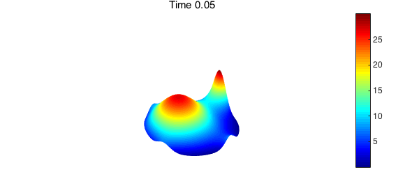
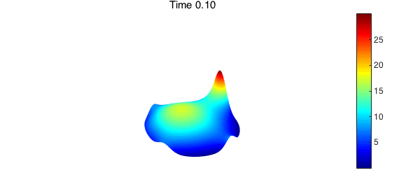
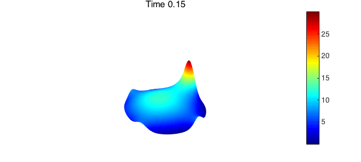
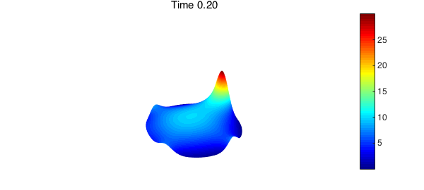
At steady-state, $u$ is no longer dependent on $t$ and satisfies Laplace's equation, $\nabla^2 u = 0$. To find the steady-state solution, we use Diskfun's fast Poisson solver.
u = diskfun.poisson(diskfun(@(x,y) 0*x), g, m,m)
u =
diskfun object
domain rank vertical scale
unit disk 31 30
The steady-state solution satisfies the maximum principle: once $u$ is constant in $t$, the maximum value of $u$ will occur on the boundary of the disk and therefore must agree with the maximum value of $g$. We plot the steady state solution and verify this fact below.
plot(u)
colormap(jet)
axis off, view([36, 34.4]), zlim([0, 35])
title('solution u at steady state' )
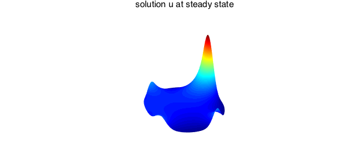
[maxu, locmaxu] = max2(u); mxu = [maxu cart2pol(locmaxu(1), locmaxu(2)) ] %maximum at steady state [maxg, locmaxg] = max(g); mxg = [maxg locmaxg ] %maximum of u0 on boundary
mxu = 30.036677407858519 1.570857451623678 mxg = 30.036677407858598 1.570857463287601
The value of the steady state solution at $r=0$ is equal to the average temperature on the boundary by the Poisson integral formula [Ch. 4, 1]. We check this property here, finding that at least in this respect, the numerical solution is highly accurate.
plot(u(:,0)) %plot of value at r=0
hold on
plot(g)
title('u(\theta, 0) and g(\theta)'), axis square, snapnow
norm(mean(g)-u(0,0))
ans =
8.881784197001252e-16
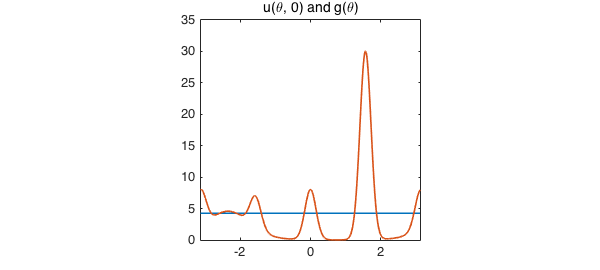
6. Extensions
The above examples provide a starting point for numerically solving diffusion problems on the disk. These ideas can also be used on the sphere (see chebfun.org/examples/sphere). More information about the underlying methods used in diskfun.poisson and diskfun.helmholtz can be found in [4] and [5]. A more general application of these methods allows one to numerically solve more complicated PDEs, such as a sixth order Navier-Stokes equation that models active biofluids [3]. We hope to expand the capabilities of Diskfun in future releases by providing more tools that are specifically related to numerically solving PDEs on the disk by using more accurate IMEX schemes for time-stepping.
7. References
[1] N. H. Asmar, Partial differential equations with Fourier series and boundary value problems, Prentice Hall, 2005.
[2] R. V. Churchill and J. W. Brown, Fourier Series and Boundary Value Problems, McGraw-Hill, 1978.
[3] J. S\l omka, A. Townsend, and J. Dunkel, Stokes II problem and Einstein-de Haas effect in active fluids, in preparation, 2017.
[4] H. Wilber, A. Townsend, and G. B. Wright, Computing with functions in spherical and polar geometries II. The disk, SIAM J. Sci. Comput., submitted, 2016.
[5] H. Wilber, Numerical computing with functions on the sphere and disk, Masters thesis, Boise State University, 2016.